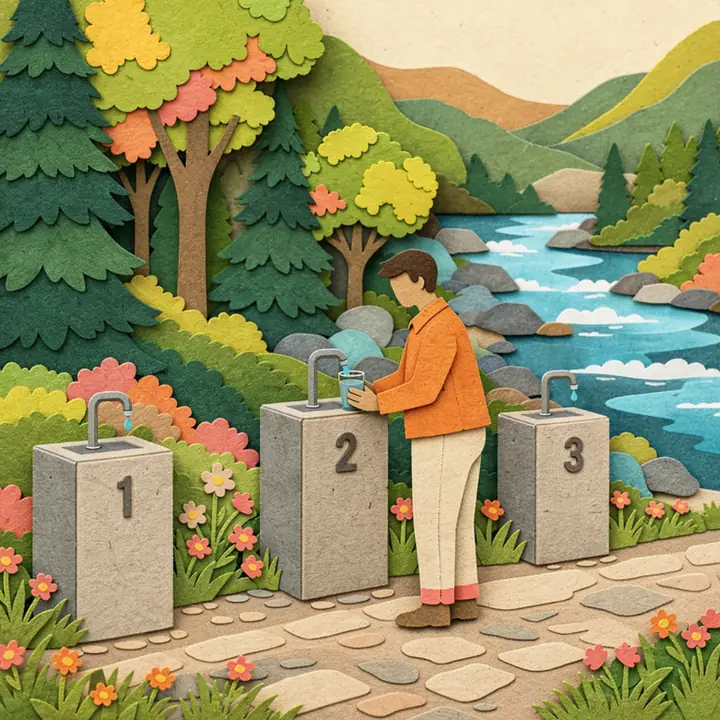

- From Kutaisi
- 1:20 by road (GNTA)
- Altitude
- about 950 m (GNTA)
- Mineral waters to drink
- 4 kinds (GNTA)
- July average
- 17 °C (Wikipedia)
- Emergency
- 112
This page is about Georgia the country, not the US state, and is part of the Georgia Travel Guide. Checked on 22 November 2026.
What Sairme is and where it is
It is a mountain spa in western Georgia, set in a forested river gorge. Georgia's national tourism site puts it this way: "Sairme, or the Land of Deer, is tucked away within the conifers and deciduous trees of Baghdati Municipality."
The region. The Imereti tourism organisation calls it "a mountainous resort of Imereti". It adds that the place "is famous for its mineral waters and beautiful nature".
Altitude. The national tourism site puts Sairme resort at 950 m above sea level. The European Historic Thermal Towns Association gives the same figure. Wikipedia gives 915 m.
The gorge. According to Wikipedia, the springs lie "in the Tsablarastsqali river gorge (the left feeder of the Khanistsqali) on the northern slope of the Meskheti Range".
The legend. The national tourism site retells a local story. Some brothers followed red-tinged water back to its source and found that it came from a wounded deer. Later, by the site's account, it turned out that the place "was abundant in deer, which led to it being named 'Sairme'".
The "magical ground". In the 1890s, the same site tells, shepherds came upon a patch of earth where snow never settled and rain evaporated in seconds. People called it "magical ground". The answer came only "in the 1920s when geologists" found "hot mineral water deep below the ground". The site gives no year for the opening of the spa, and neither do we.
Other spa towns. This is one of several spa resorts in Georgia. For radon baths, see our Tskaltubo guide. For Borjomi water and how to read its label, see our Borjomi guide.

Sairme mineral water: drinking at the springs
Anyone can drink the mineral water for free, says the Imereti tourism organisation. A course of treatment is set at the resort's polyclinic, according to the national tourism site.
Warm water to bathe in. For a Sairme spa day, the national tourism site lists warm thermal water to bathe in alongside the drinking waters. The Imereti tourism organisation also names an outdoor pool.
What the official sites say
Both official sites describe several different waters, each with its own use. Neither gives a daily amount or a schedule.
Four drinking waters. The national tourism site speaks of "warm thermal water to bathe in and four different kinds of mineral water to drink - each with different properties".
The buvettes. In the words of the Imereti tourism organisation: "A comfortable construction of mineral water buvettes is arranged near the springs, each spring has its purpose." The travel blog Wander-Lush writes: "Numbered concrete buvettes dot the edge of the Bostania river in the centre of town."
Not all the same. Wikipedia gives a mineralisation from 1.6 g/L to 9.5 g/L; the top figure is for one borehole. So the waters are far from identical.
Health claims. The tourism site speaks of therapeutic effects; we found no medical confirmation. Mineral water is not a medicine.

How much can you drink?
Large amounts without a prescription are not recommended. The Imereti tourism organisation puts it this way:
"Everyone can drink mineral water for free, however, it should be noted that taking large amounts without a doctor's prescription is not recommended."
It gives no figure for "large amounts", and we do not invent one.
Our tip. If you have high blood pressure, a heart condition or another long-term illness, or keep to a low-salt diet, check with your own GP before the trip. Watch the sodium: how to read it on a bottle label is explained in our Borjomi guide.
Who decides on a course
The polyclinic on site does, and each course is set individually.
The polyclinic. The national tourism site describes "a 24-hour polyclinic where experienced doctors individually prescribe courses of mineral water treatment". We could not check its hours ourselves.
Our tip.
- Bring a list of your medicines and a short medical summary, in English if you can.
- Mention any condition, even one that is under control.
- The local physician decides. If the answer is no, accept it.

How to get to Sairme
By road it takes 1 hour 20 minutes from Kutaisi (1:20 on the national tourism site). The distance is about 50–55 km: the Imereti tourism organisation gives 50 km, Wikipedia 55 km.
Kutaisi to Sairme
Take a marshrutka to the nearest town, then a taxi for the last stretch. A 2024 post by the travel blog Wander-Lush says: "Marshrutka vans to Baghdati depart from Kutaisi Central Bus Station throughout the day, taking around 1.5 hours to reach the town."
The last stretch. The blog adds: "There is no public transport to Sairme, so you'll need to take a local taxi the rest of the way." We found no official timetable, so we give none.
How the vans work is in our guide Marshrutka in Georgia. For the city where you start, see our Kutaisi guide.
Tbilisi to Sairme
It is a long day on the road. The national tourism site gives 4:25 by road from Tbilisi and 3:20 from Batumi.
We give no prices or timetables: they change, and we found no official source for them.
The mountain road
The road up to the resort is paved; the road beyond it, towards Abastumani, is not, according to Wander-Lush.
From the city. The blog puts Sairme "just over an hour's drive" south of the city and calls the road "fully paved and easy to navigate".
Further south. "The road after the resort between Sairme and Abastumani to the south is unpaved and very rough," the blog warns. It also says the Zekari Pass is normally closed in winter, roughly from December to March, because of heavy snow. Read Night Driving, Mountains and Winter in our Driving in Georgia guide.
Our tip. Agree the ride back with your driver before you set off. Do not drive the mountain road in the dark or in snow.

Sairme weather: when to go
Summers are moderately warm and winters mild, according to Wikipedia.
The figures. Wikipedia writes: "Summers are moderately warm with an average July temperature of 17 °C" and "winters are mild with an average January temperature of –1 °C". It adds: "Precipitation totals 940 mm (37.01 in) annually." It names neither the weather station nor the years.
The season. The adventure attractions open "roughly from the end of April until October", according to Wander-Lush. We give no live forecast here.
Our tip. In winter, ask your host about the road and what is open before you travel.
Things to do in Sairme
Drinking at the buvettes, forest walks and an adventure park. Bigger sights are elsewhere; the national tourism site gives no distances to them.
The adventure park. The Imereti tourism organisation lists "an 800-meter Zip Line", "a city of ropes, and an outdoor pool".
Walks. Wander-Lush writes: "There are several marked hiking trails that start from Sairme Resort, including the 'Air Temple' trail." It gives no lengths. Before a longer walk, read our guide Hiking in Georgia.
Further afield. The national tourism site lists these top attractions on the same page:
- Okatse Canyon;
- Prometheus Cave and Sataplia Cave, both in our Tskaltubo guide;
- Borjomi-Kharagauli National Park;
- the Katskhi Pillar.
Our tip. In the forest, watch where you step: the UK government warns of vipers, especially in early summer. Keep away from dogs, and if one bites or scratches you, see Rabies in Georgia. More in Snakes, Dogs and Weather.
Doctors and medical help near Sairme
In an emergency, dial 112. For a clinic or a hospital, plan on Kutaisi.
Emergency. The UK government's health advice says: "Dial 112 and ask for an ambulance." It also warns: "Outside Tbilisi, medical facilities are limited." Georgia's 112 service says its call-takers handle calls in Georgian, English, Azerbaijani, Armenian, Turkish and Russian. It adds that to call 112 the "phone must be in the mobile operator coverage area". Step by step: Ambulance in Georgia.
At the resort. The polyclinic is described above. The national tourism site does not say what emergencies it handles.
Rabies and snakes. The UK government lists "rabies – treatment is available in Tbilisi and major towns". It also lists "venomous snakes (vipers), particularly in early summer – few medical facilities outside major towns have anti-venom". After a dog bite or scratch, get medical attention immediately, the UK government advises.
City clinics. The catalogue of doctors and clinics in Kutaisi on 100doc.ge listed 139 clinics on 22 November 2026. Of these, 25 had a hospital profile.
Your cover. Visitors need health and accident cover of at least 30,000 GEL for their whole stay; see Insurance to Enter Georgia (2026 Rule).
Our tip.
- Bring enough of your regular medicines for the whole trip, in their original packs.
- Save 112 and your host's number in your phone.
- If you feel unwell in the thermal water, get out and tell the staff at once.

Frequently asked questions
Where is Sairme?
How do I get to Sairme from Kutaisi?
Is the mineral water free to drink?
How much Sairme water can I drink?
Is there a doctor at the resort?
What is the weather like in winter?
Sources
- Georgian National Tourism Administration (georgia.travel): the Sairme page ↑
- Imereti Destination Management Organization (kutaisi.travel): resort page ↑
- Wikipedia: Sairme (water) (secondary source) ↑
- European Historic Thermal Towns Association (EHTTA): Imereti Region ↑
- Wander-Lush: visiting Sairme (travel blog, updated 16 June 2024) ↑
- GOV.UK travel advice for Georgia: health ↑
- Public Safety Command Center 112 (112.gov.ge): languages and how calls work ↑
This guide is general information, not medical advice: the doctor decides on your care.